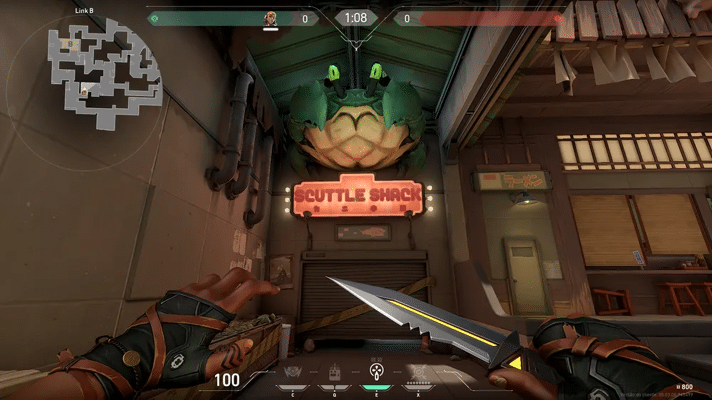

página inicial
VALORANT
INTRODUÇÃO
Valorant é um jogo de tiro online em primeira pessoa no qual dois grupos de cinco pessoas se enfrentam em batalhas em arenas. A cada partida, os jogadores devem concluir as missões do time ou impedir que os adversários completem os próprios objetivos.
O estilo é bem parecido com CS:GO mas as personagens tem habilidades que a faz parecer também com overwatch, mesmo sendo parecido com dois jogos de tiros, o valorant virou um dos jogos mais jogados do ano, tendo muita popularidade em muitos países e na mídia, como youtube, tiktok, twitch, etc.
CURIOSIDADES
O valorant está cheio de "easter eggs" de diferentes
jogos e ainda tem histórias por trás delas.
Aqui temos 6 "easter eggs" da valorant:
Sage e Shurima: A personagem Sage em Valorant ostenta um símbolo em sua vestimenta que parece ser uma homenagem a Shurima, uma região importante no universo de League of Legends. Shurima é conhecida por ser o lar de campeões emblemáticos como Azir, Sivir, Nasus, Renekton e Xerath.
Referências do Legends of Runeterra (LoR): O jogo de cartas da Riot Games expande a história de Shurima através de cartas como o "Disco Solar Soterrado", evidenciando o desejo do campeão Azir de restaurar a glória de seu lar. Cartas do LoR oferecem insights sobre a mitologia, campeões e elementos de Shurima. Tahm Kench em Ascent : No mapa Ascent, um banco com o rosto de Tahm Kench, o "Rei do Rio", é uma referência marcante. Conhecido como "TK" pelos jogadores de League of Legends, Tahm Kench é um campeão que normalmente atua como suporte na rota inferior
Ursos de pelúcia e brinquedos: Esses elementos estão espalhados pelos mapas de Valorant, alguns visíveis apenas no modo "fantasma". Além dos ursos de pelúcia, há referências a outros brinquedos, como coalas armados no mapa Breeze, pinguins, bonecos de neve em Icebox, esquilos e cobras em diferentes cenários.
Aronguejo do League of Legends em Split: No mapa Split, há uma referência ao Aronguejo, uma criatura inofensiva do League of Legends encontrada nos rios da selva de Summoner's Rift. Eliminá-lo no LoL traz benefícios aos caçadores, concedendo visão temporária, ouro e experiência.

Homenagem a Team Fortress 2 em Haven: No mapa Haven, há uma caixa que remete ao jogo Team Fortress 2. Ela contém um item semelhante ao Jarratê usado pelo Sniper no TF2, uma arma que pode revelar espiões, causar dano e até apagar o fogo de aliados.